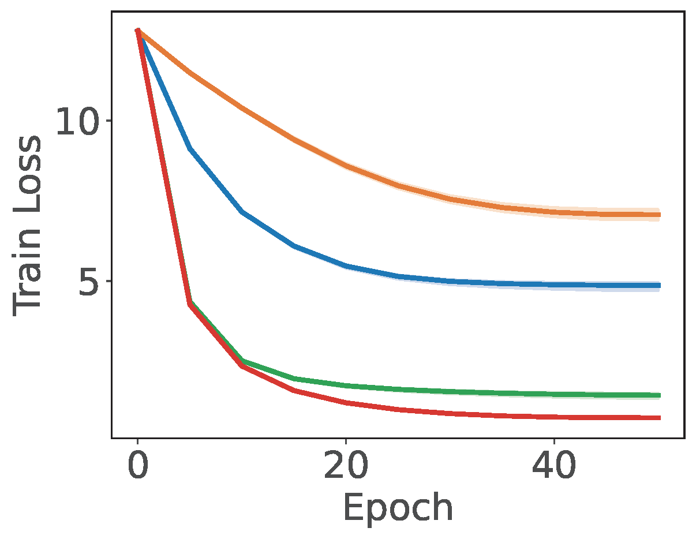
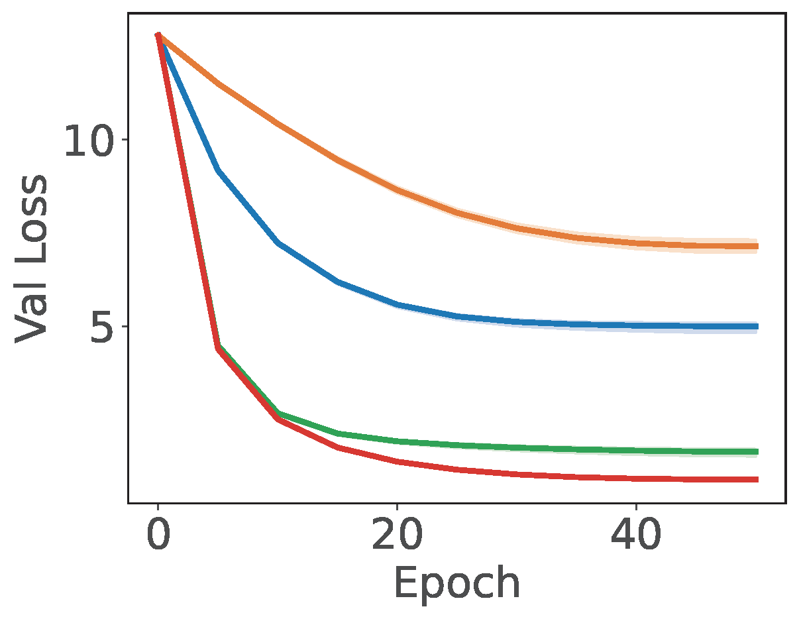

Section 6.3 Extreme Multi-class Classification
Multi-class classification is a cornerstone of machine learning. However, many modern applications involve an exceptionally large label space—ranging from millions to even billions of categories—a challenge known as extreme multi-class classification (XMC). For instance, for face recognition, the model learning is often formulated as classifying images into unique identities. With millions of distinct individuals, the model must navigate millions of corresponding classes. Similarly, when training a language model to predict the next word, the problem is treated as a multi-class classification task where each word in the vocabulary represents a category. Given that the English language contains over one million words, the resulting number of classes is immense.
A dominating approach of multi-class classification is logistic regression, which minimizes the cross-entropy loss. Let us consider learning a linear model by solving the following problem:
\[\begin{align*} \min_{W} \frac{1}{n}\sum_{i=1}^n -\log\frac{\exp(\mathbf{w}_{y_i}^{\top}h(\mathbf{x}_i))}{\sum_{j=1}^K \exp(\mathbf{w}_{j}^{\top}h(\mathbf{x}_i))} \end{align*}\]
where \(y_i\in\{1,\ldots,K\}\) denotes the true class label of \(\mathbf{x}_i\), \(W=(\mathbf{w}_1, \ldots, \mathbf{w}_K)\in\mathbb{R}^{d\times K}\) contains the weights for all classes, and \(h(\mathbf{x})\in\mathbb{R}^{d}\) denotes the feature vector of each data. When \(K\) is huge, it is not efficient to compute the normalization term \(\sum_{j=1}^K \exp(\mathbf{w}_{j}^{\top}h(\mathbf{x}_i))\) for each data and loading all \(W\) into the memory might be prohibited.
To solve this problem, we can use the SCENT algorithm presented in Section 5.5.2. To this end, we reformulate the problem into the following equivalent min-min optimization:
\[\begin{align*} \min_{W}\min_{\boldsymbol{\nu}} \frac{1}{n}\sum_{i=1}^n \left\{\frac{1}{K}\sum_{j=1}^K \exp(\mathbf{w}_{j}^{\top}h(\mathbf{x}_i) - \mathbf{w}_{y_i}^{\top}h(\mathbf{x}_i) - \nu_i) + \nu_i- 1 \right\}. \end{align*}\]
Algorithm 26: SCENT for solving XMC
- Require: learning rate schedules, starting points \(W_1, \boldsymbol{\nu}_0\)
- for \(t=1\dotsc,T-1\) do
- Sample a mini-batch data \(\mathcal{B}_t\subset \{1,\dotsc, n\}\) with \(|\mathcal{B}_t| = B\)
- Let \(\mathcal{C}_t\) denote the set of unique labels in \(\mathcal{B}_t\)
- for each \((\mathbf{x}_i, y_i)\in\mathcal{B}_t\) do
- Update \(\nu_{i,t}\) by solving \[\nu_{i,t}= \arg\min_{\nu} \frac{1}{|\mathcal{B}_t|-1}\sum_{y_j\in\mathcal{B}_t\setminus y_i}\exp((\mathbf{w}_{t,y_j} -\mathbf{w}_{t,y_i})^{\top}h(\mathbf{x}_i) - \nu) + \nu + \frac{1}{\alpha_t}D_\varphi(\nu, \nu_{i,t-1})\]
- end for
- Compute \(\mathbf{Z}_{t}[\mathcal{C}_t]=\nabla L_t(W_t[\mathcal{C}_t])\) by calling backprop on the mini-batch loss \[L_t(W_t[\mathcal{C}_t])= \frac{1}{B}\sum_{i\in\mathcal{B}_t}\frac{1}{|\mathcal{B}_t|-1}\sum_{y_j\in\mathcal{B}_t\setminus y_i}\exp((\mathbf{w}_{t,y_j} -\mathbf{w}_{t,y_i})^{\top}h(\mathbf{x}_i) - \nu_{i,t})\]
- Compute \(\mathbf{V}_{t}[\mathcal{C}_t] = (1-\beta_t)\mathbf{V}_{t-1}[\mathcal{C}_t] + \beta_t \mathbf{Z}_{t}[\mathcal{C}_t]\) (momentum)
- Update \(W_{t+1}[\mathcal{C}_t] = W_t[\mathcal{C}_t] - \eta_t\mathbf{V}_{t}[\mathcal{C}_t]\)
- end for
We present an application of SCENT for solving this problem in Algorithm 26. At each iteration, the algorithm begins by sampling a mini-batch \(\mathcal{B}_t\) (Step 3) to approximate the outer summation over \(n\) data points. Following this, the algorithm updates the dual variables \(\nu_i\) for each \(i \in \mathcal{B}_t\). While the original SCENT algorithm requires sampling from the full set of classes \(\{j=1, \dots, K\}\), we observe that for all sampled data, the weights corresponding to their true labels \(\{\mathbf{w}_{y_i} : i \in \mathcal{B}_t\}\) must already be accessed. Consequently, we utilize the ‘in-batch’ class labels to approximate the inner summation, setting \(\mathcal{Y}_t = \{\!\{ y_i \}\!\}_{i\in\mathcal{B}_t}\) be the multiset of labels and \(\mathcal{C}_t\) to the set of unique labels in \(\mathcal{B}_t\). To update \(\boldsymbol{\nu}_{t}\) and \(W_t\), the following calculations are implemented.
Computing Sampled and Shifted Logits. Given the mini-batch \(\mathcal{B}_t\) and the set of sampled classes \(\mathcal{Y}_t\), we first compute the inner products between the features \(h(\mathbf{x}_i)\) and class weights \(\mathbf{w}_j\) for all \(i \in \mathcal{B}_t\) and \(j \in \mathcal{Y}_t\). This is efficiently computed via the matrix product \(Q = H[\mathcal{B}_t]^\top W[\mathcal{Y}_t] \in \mathbb{R}^{B \times |\mathcal{Y}_t|}\), where \(H[\mathcal{B}_t] = [h(\mathbf{x}_i)]_{i \in \mathcal{B}_t}\) represents the sampled feature matrix. We then derive the shifted logits matrix \(R\), defined by the entries \(R_{ij}=\mathbf{w}_j^\top h(\mathbf{x}_i) - \mathbf{w}_{y_i}^\top h(\mathbf{x}_i)\) for all \(i \in \mathcal{B}_t, j \in \mathcal{Y}_t\).
Closed-form update for \(\nu_{i,t}\). Given the shifted logits matrix \(R\), we update the state variable \(\nu_{i,t}\) according to Lemma 5.26:
\[\begin{align*} \nu_{i,t} = \nu_{i,t-1} + \log\left(1+\alpha_t\frac{1}{|\mathcal{Y}_t|-1} \sum_{j \in \mathcal{Y}_t\setminus y_i} \exp(R_{ij})\right) - \log(1+\alpha_t e^{\nu_{i,t-1}}), \end{align*}\]
where we treat the labels in \(\mathcal{Y}_t\setminus y_i\) as independent samples from \(\{1,\ldots, K\}\).
To ensure numerical stability when \(\nu_{i,t-1}\) or \(R_{ij}\) are large, we apply standard logarithmic identities. Specifically, while \(\nu_{i,t-1}\) typically remains within a stable range, the term \(\log(1 + \alpha_t e^{\nu_{i,t-1}})\) can be computed as \(\nu_{i,t-1} + \log(e^{-\nu_{i,t-1}} + \alpha_t)\) for large positive values of \(\nu_{i,t-1}\). Furthermore, we stabilize the second term using the Log-Sum-Exp trick by shifting the exponents by \(R_{i,\max} = \max_{j \in \mathcal{Y}_t\setminus y_i} R_{ij}\):
\[\begin{align*} &\log\left(1+\frac{\alpha_t}{|\mathcal{Y}_t|-1} \sum_{j \in \mathcal{Y}_t\setminus y_i} \exp(R_{ij})\right) \\ &=\log\left(\exp(-R_{i, \max})+\frac{\alpha_t}{|\mathcal{Y}_t|-1} \sum_{j \in \mathcal{Y}_t\setminus y_i} \exp(R_{ij} - R_{i,\max})\right)+ R_{i,\max}. \end{align*}\]
Updating \(W_t[\mathcal{C}_t]\). Finally, the gradient of \(W_t[\mathcal{C}_t]\) is computed by performing backpropagation on the mini-batch loss \(L_t(W_t[\mathcal{C}_t])\). Because the loss function is defined only over the sampled classes, the gradient updates are sparse and operate exclusively on the sampled subset \(W_t[\mathcal{C}_t]\). This approach eliminates the need to load the entire weight matrix \(W\) into the main memory, significantly reducing the memory overhead in hardware-constrained environments.
💡 Empirical Comparison with baselines
An empirical study demonstrating the effectiveness of SCENT for XMC is presented in Figure 6.7, which compares Algorithm 26 with SGD, BSGD, and the SOX method. The key differences between these methods and Algorithm 26 are as follows: (i) SOX is closely related to SCENT, but uses a step size \(\alpha_{i,t}=\gamma e^{-\nu_{i,t-1}}\) when updating \(\nu_{i,t}\); (ii) SGD employs a standard stochastic coordinate update for the dual variables \(\boldsymbol{\nu}\); and (iii) BSGD simply computes the gradient of \(W_t[\mathcal{C}_t]\) using the following mini-batch loss:
\[\frac{1}{B}\sum_{i\in\mathcal{B}_t} -\log\frac{\exp(\mathbf{w}_{y_i}^{\top}h(\mathbf{x}_i))}{\sum_{j\in\mathcal{Y}_t\setminus y_i} \exp(\mathbf{w}_{j}^{\top}h(\mathbf{x}_i))}.\]

